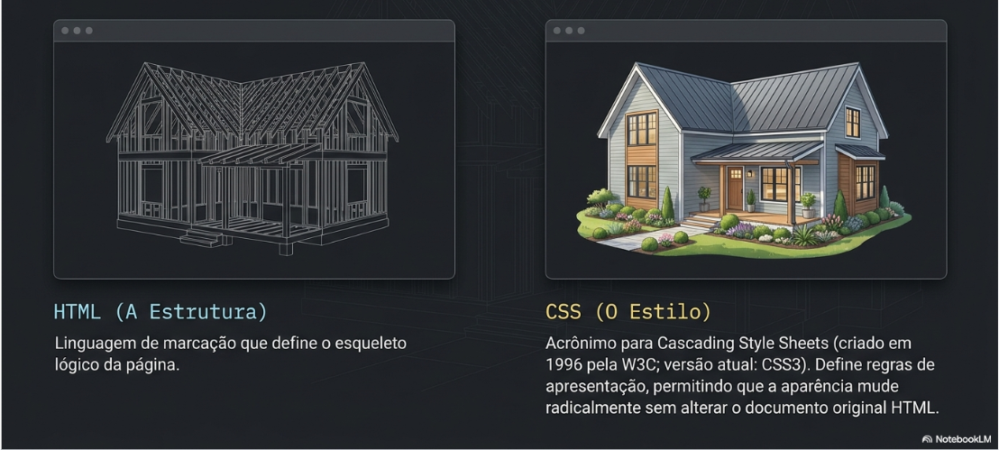
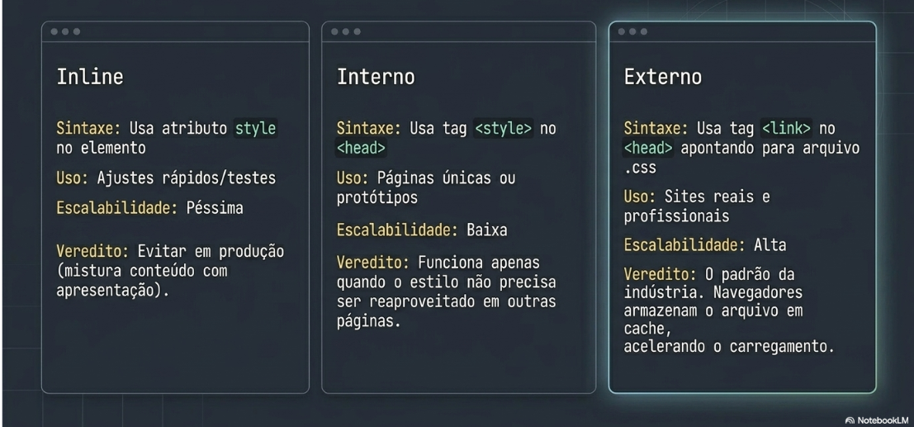
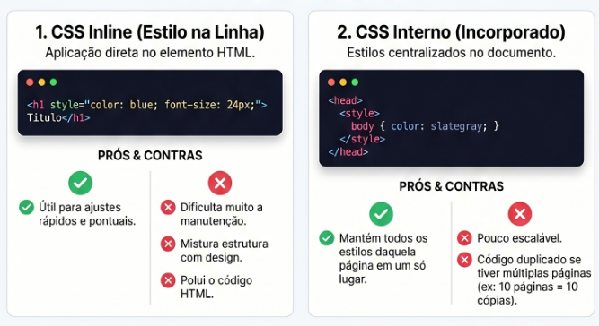
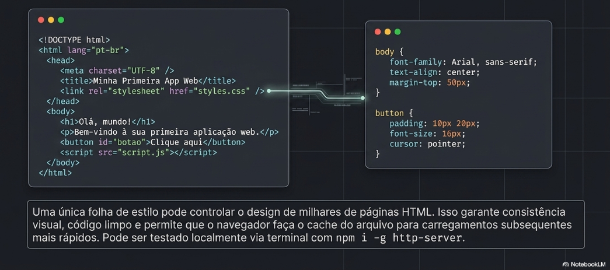
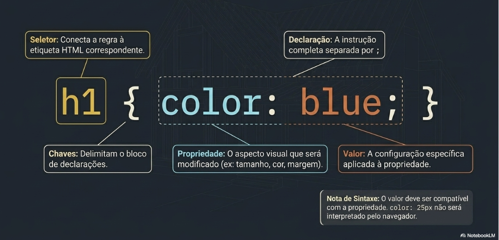
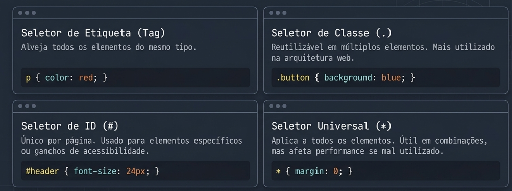
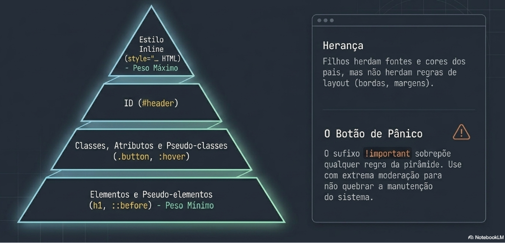
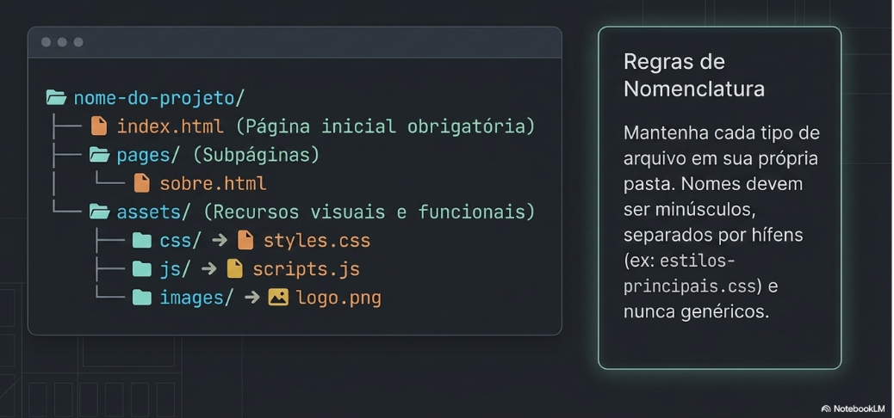
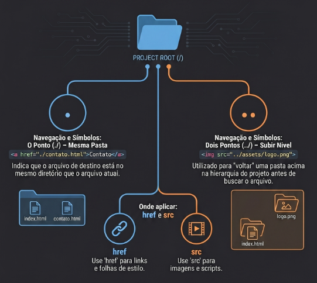
Criar o repositório portifolio-info1-2026 no GitHub e organizar a estrutura profissional de pastas (/assets, /css, /images).
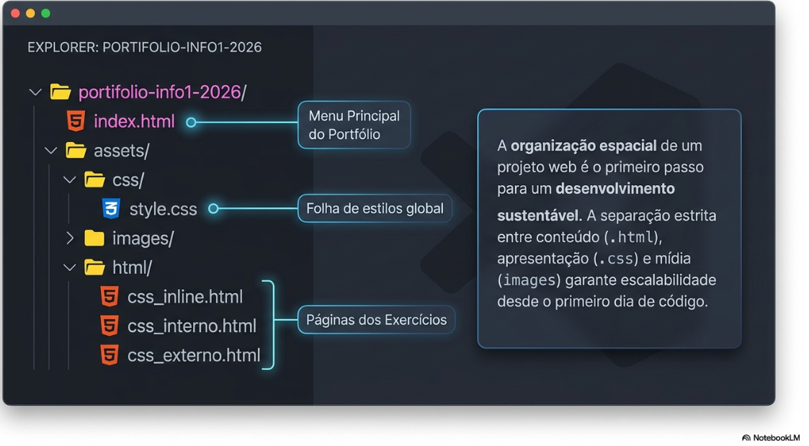
Aplicar cor azul e tamanho 24px diretamente na tag <h1> usando o atributo style no arquivo "css_inline.html" na pasta "css_inline".
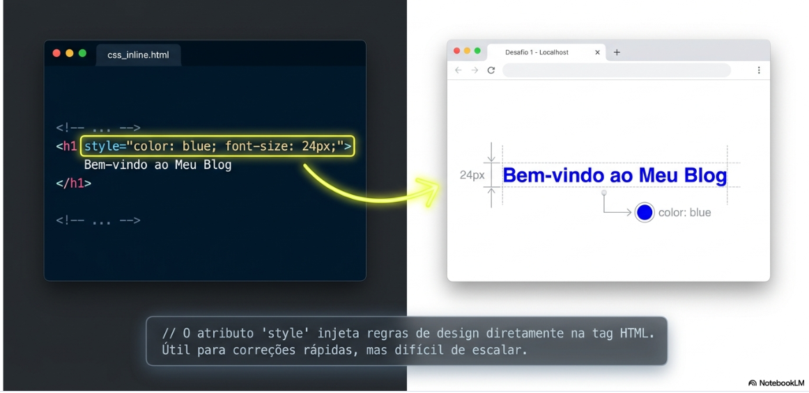
Usar a tag <style> dentro do <head> para configurar a cor slategray e o tamanho 16px para o <body> do arquivo "css_interno.html" na pasta "css_interno".
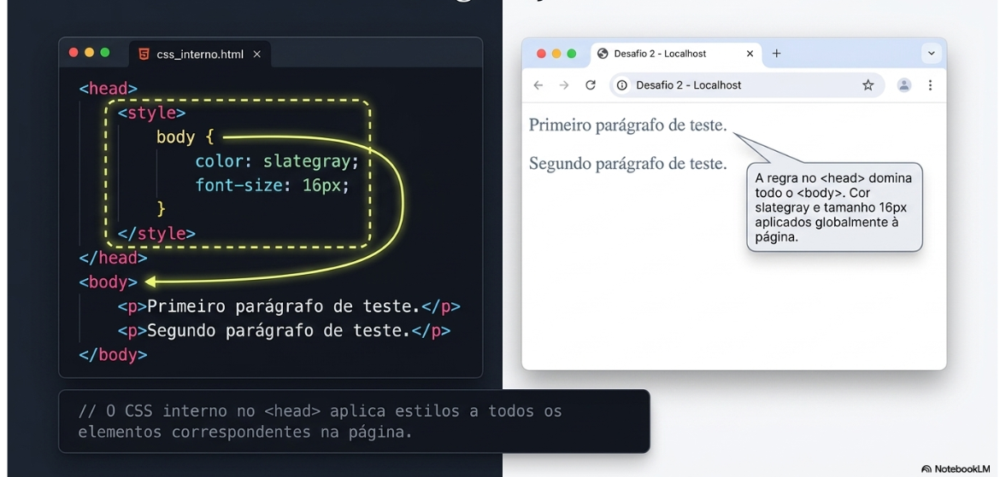
Criar o arquivo styles.css, vinculá-lo via tag <link> e definir a fonte Arial 14px como padrão para paragrafo para o arquivo "css_interno.html" na pasta "css_externo".
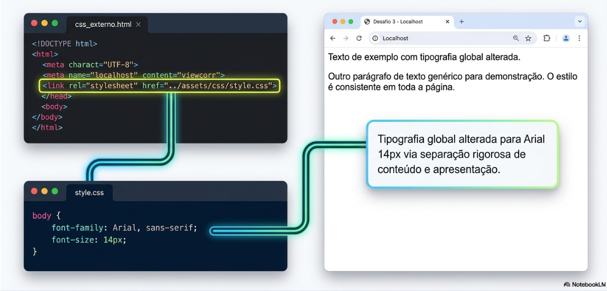
Criar o arquivo index.html com link para os três arquivos html criados na tarefa 2, 3 e 4.
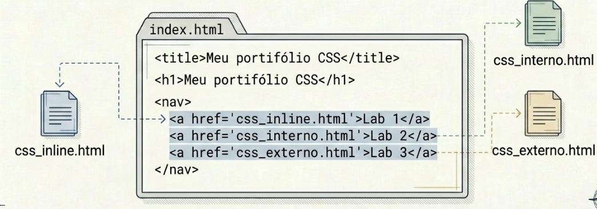
Realizar a disponibilização no Github Pages da página e enviar o link do projeto publicado.
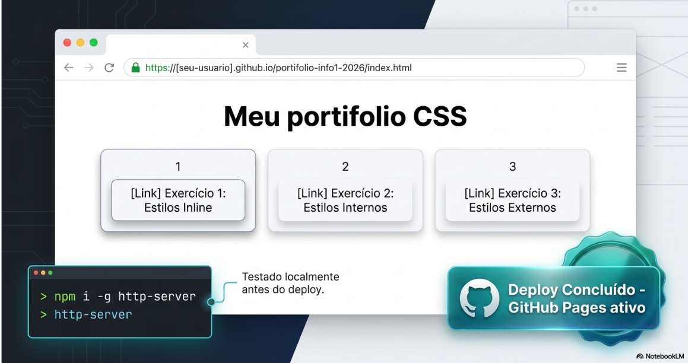
O objetivo aqui é criar a base organizada para evitar links quebrados e facilitar a manutenção
O objetivo aqui é criar um arquivo com CSS inline é aplicado diretamente na tag HTML para mudanças pontuais.
<h1 style="color: blue; font-size: 24px;"<Meu portifólio CSS</h1>
O objetivo aqui é criar um arquivo com estilo interno centraliza as regras de uma página no seu cabeçalho.
body { color: slategray; font-size: 16px; }
O objetivo aqui é criar a estrutura para utilizar css externo, a forma profissional que separa totalmente o conteúdo da aparência.
p { font-family: Arial, sans-serif; font-size: 14px; }
<link rel="stylesheet" href="../../assets/css/style.css">
O objetivo aqui é criar a página que será a "porta de entrada" do seu site.
<h1>Meu portifólio CSS</h1> no arquivo index.html.<a href="html/css-inline/css_inline.html">CSS inline</a><a href="html/css-interno/css_interno.html">CSS interno</a><a href="html/css-externo/css_externo.html">CSS externo</a>O objetivo aqui é transformar seu código em um site acessível por qualquer pessoa.
Parabéns! Você concluiu todas as tarefas. Agora você compreende como estilizar suas págnas HTML.